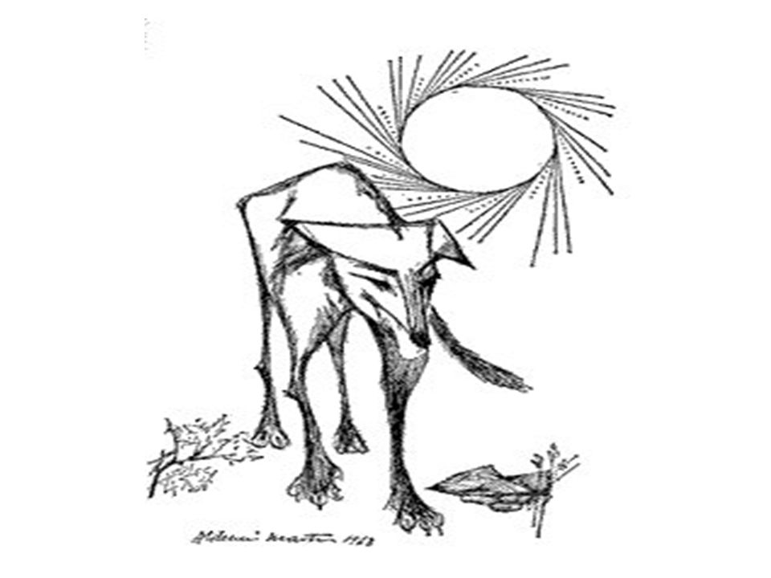

Érica Graciano nasceu e cresceu em Saquarema - Rio de Janeiro, sotaque carregaaaado. Ela já foi subgerente de restaurante, garçonete, cuidou de criança.
Com 23 anos teve sua primeira filha, Lavínia, com amor da sua vida e primeiro namorado que por motivos maiores não pode estar presente.
Lívia, sua filha recém nascida é a mais sapeca. Sobe pelas paredes, escala o guarda-roupas. Ela ama ter duas filhas e isso basta para ter companhia no dia a dia e se esforçar para dar o melhor para elas.
Ela ama praia mas não sabe nadar. É por isso que ela faz Turismo na Universidade Federal Fluminense e é bolsista do CNPq. Faz Turismo na esperança de ensinar as belezas do Rio de Janeiro e em troca conhecer alguém que a ensine a nadar.
Praia - Saquarema
Aula 2 - Local Preferido - Peró Cabo Frio
Praia - Cabo Frio
Dia de folga, dia de praia. O tempo voltou a esquentar Próximo a mim, dois homens debatem política na silenciosa manhã de sol. A velha e aguada discussão entre petrificados conceitos de direita e esquerda. A onda há de levar. Apesar de opiniões bem distantes, os dois caras, que se encontram na areia carioca, se respeitam. Nada de ataque naval. De nenhum lado. Mais à frente, uma moça, nova, faz a lição de casa, sentada em uma canga. Lição da praia. De fato, as democráticas praias cariocas têm muito a nos ensinar em tempos de tanta intolerância, incompreensão, falta de reflexão e diálogo.
Sim, eu sei que a intolerância e o preconceito já pisaram com força em nossas areias. Infelizmente, em alguns casos criminosos, ainda pisam. Tem o famoso vídeo de algumas pessoas dizendo que não querem pobres em “suas” praias. E há quem faça isso sem ser filmado e não somente com pessoas de classes econômicas menos abastardas. Queimação total. Contudo, no geral, nosso filtro solar democrático nos livra dessa fedida maresia.
As praias cariocas não renegam ninguém. Estão sempre com as portas abertas. Foi na orla que a cidade começou. E são as praias que nos dão uma grande lição de democracia para continuarmos, cada vez melhores, daqui para frente.
Precisamos aprender com as nossas praias, ou vamos ficar ancorados em uma história de retrocessos, a ver navios. A esperança vem do mar
Aula 3 - História Contada

Baleia - Vidas Secas
Um lavrador tinha dois burros. Para que não fugissem, resolveu amarrá-los em uma só corda, cada um em uma extremidade. Depois de algum tempo, os dois começaram a sentir fome. A comida estava perto. Grandes montes de feno estavam ao alcance de sua visão. Os dois tentaram chegar até eles. A corda era muito curta e, puxando cada qual para o seu lado, nenhum dos dois conseguia alcançar o seu monte de feno. Então compreenderam que o melhor era sentar e dialogar. Talvez juntos conseguissem encontrar uma solução.
Assim o fizeram. Durante um bom tempo, estiveram a dar voltas ao assunto, sem conseguir encontrar um jeito de chegar ao feno. Por fim, disse um deles:
- Vamos ver! Nós dois estamos com fome. A corda que nos une é muito curta e não podemos ir cada um para o seu lado. Por que não vamos juntos para o primeiro monte de feno? Assim, ambos poderíamos comer dele e depois provar o segundo. Dessa forma, comeríamos a quantidade habitual.
- Boa ideia! admitiu seu companheiro.
Pondo em prática a sugestão, banquetearam-se ambos, apesar da corda com que haviam sido amarrados. Mostraram, dessa forma, que os burros não são tão burros quanto parecem.